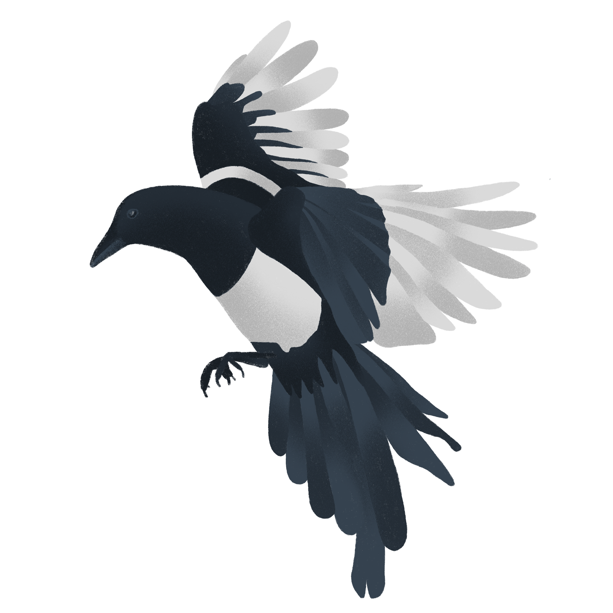
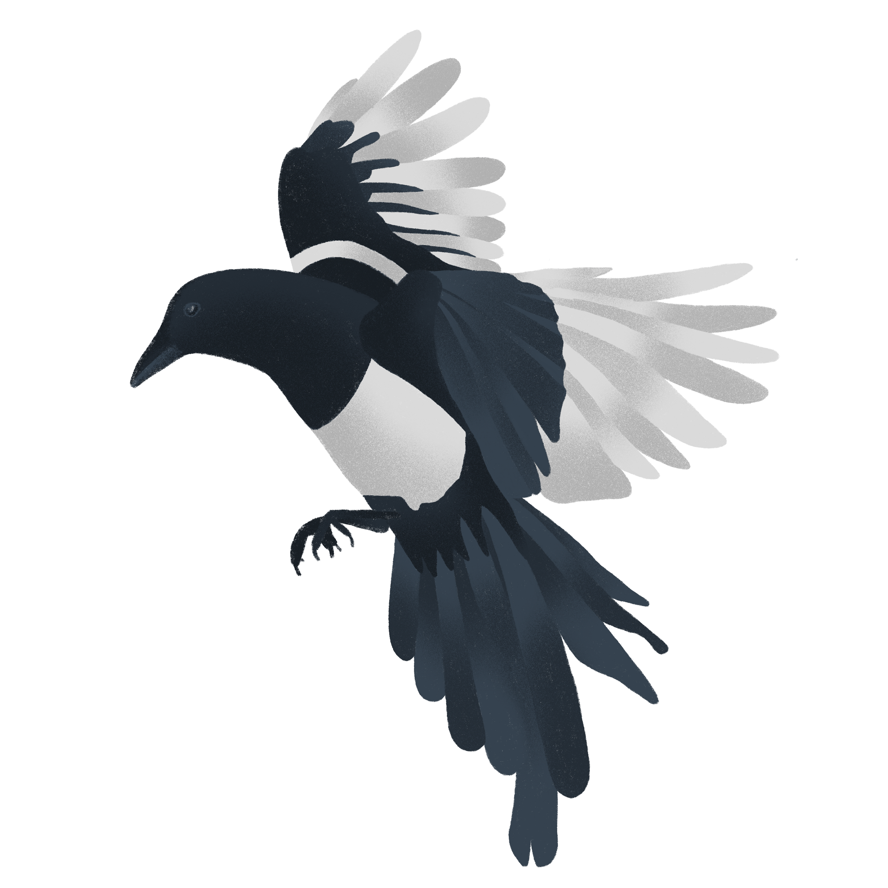

|
Julu - the explorer girl is an interactive game for kids and adults to instill interest in our native wildlife. Julu loves our outback and travels through our beautiful terrain and meet several animals which she absolutely love.
How to Play Your mission is to meet and touch all the wildlife and beware !! some of them move really fast. You can jump and touch the birds. Use Key to jump and touch the flying birds Capture the Fun facts flyers to know more about our native wildlife |

 
